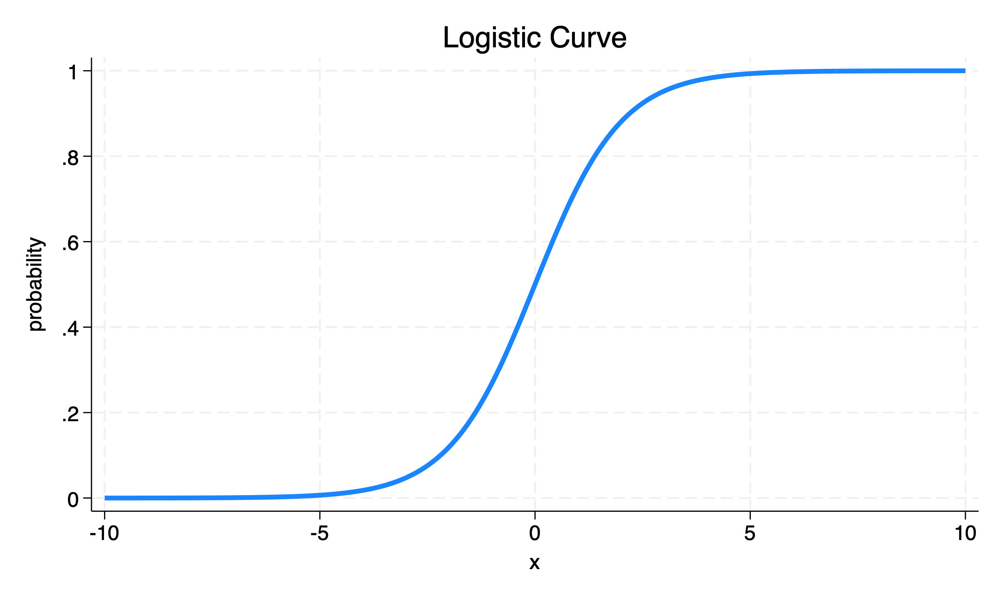

use "FrenchSkiiers.dta"With the French Skiiers Data
We use the French Skiiers data that we have used in other examples.
use "FrenchSkiiers.dta"
tabulate Tx Outcome [fweight = Count] | Outcome
Tx | No Cold Cold | Total
--------------+----------------------+----------
Placebo | 109 31 | 140
Ascorbic Acid | 122 17 | 139
--------------+----------------------+----------
Total | 231 48 | 279 For the sake of teaching and exposition, I re-arrange the numbers slightly.
| Develop Outcome | Do Not Develop Outcome | |
|---|---|---|
| Exposed | a | b |
| Not Exposed | c | d |
| Cold | No Cold | |
|---|---|---|
| Ascorbic Acid | 17 (a) | 122 (b) |
| Placebo | 31 (c) | 109 (d) |
\(R = \frac{a}{a+b}\) (in Exposed)
\(RD =\)
\(\text{risk in exposed} - \text{risk in not exposed} =\)
\(a/(a+b) - c/(c+d) =\)
\((17/139) - (31/140) =\)
\(-.09912641\)
| Develop Outcome | Do Not Develop Outcome | |
|---|---|---|
| Exposed | a | b |
| Not Exposed | c | d |
\(OR =\)
\(\frac{\text{odds that exposed person develops outcome}}{\text{odds that unexposed person develops outcome}} =\)
\(\frac{\frac{a}{a+b} / \frac{b}{a+b}}{\frac{c}{c+d} / \frac{d}{c+d}} =\)
\(\frac{a/b}{c/d} =\)
\(\frac{ad}{bc} =\)
\((17 * 109)/(122 * 31) =\)
\(.4899526\)
As discussed, the formula for logistic regression is:
\[\ln \Big(\frac{p(\text{outcome})}{1-p(\text{outcome})} \Big) = \beta_0 + \beta_1 x\]
Here \(p(\text{outcome})\) is the probability of the outcome.
\(\frac{p(\text{outcome})}{1-p(\text{outcome})}\) is the odds of the outcome.
Hence, \(\ln \Big(\frac{p(\text{outcome})}{1-p(\text{outcome})} \Big)\) is the log odds of the outcome.
The logistic regression equation is appropriate to reflect changes in the probability of an outcome that can be either 1 or 0.

Logistic regression returns a \(\beta\) coefficient for each independent variable \(x\).
These \(\beta\) coefficients can then be exponentiated to obtain odds ratios: \(OR = e^{\beta}\)
If \(\ln(y) = x\), then \(y = e^x\)
So, if … \(\ln \Big(\frac{p(\text{outcome})}{1-p(\text{outcome})}\Big) = \beta_0 + \beta_1 x\) then \(\frac{p(\text{outcome})}{1-p(\text{outcome})} = e^{\beta_0 + \beta_1 x} = e^{\beta_0} \times e^{\beta_1 x}\)
We see that the odds ratio given by logistic regression,
.4899526, is the exact same as that given by manually calculating the odds ratio from a contingency table.
An advantage of logistic regression is that it can be extended to multiple independent variables.
logit Outcome Tx [fweight = Count], orIteration 0: Log likelihood = -128.09195
Iteration 1: Log likelihood = -125.68839
Iteration 2: Log likelihood = -125.65611
Iteration 3: Log likelihood = -125.6561
Logistic regression Number of obs = 279
LR chi2(1) = 4.87
Prob > chi2 = 0.0273
Log likelihood = -125.6561 Pseudo R2 = 0.0190
------------------------------------------------------------------------------
Outcome | Odds ratio Std. err. z P>|z| [95% conf. interval]
-------------+----------------------------------------------------------------
Tx | .4899526 .1613519 -2.17 0.030 .256942 .9342712
_cons | .2844037 .0578902 -6.18 0.000 .1908418 .423835
------------------------------------------------------------------------------
Note: _cons estimates baseline odds.